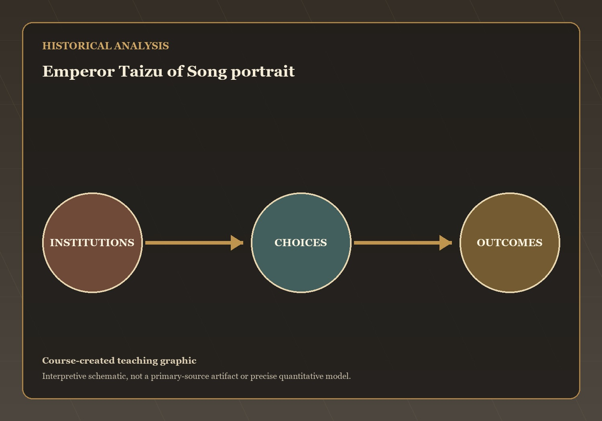
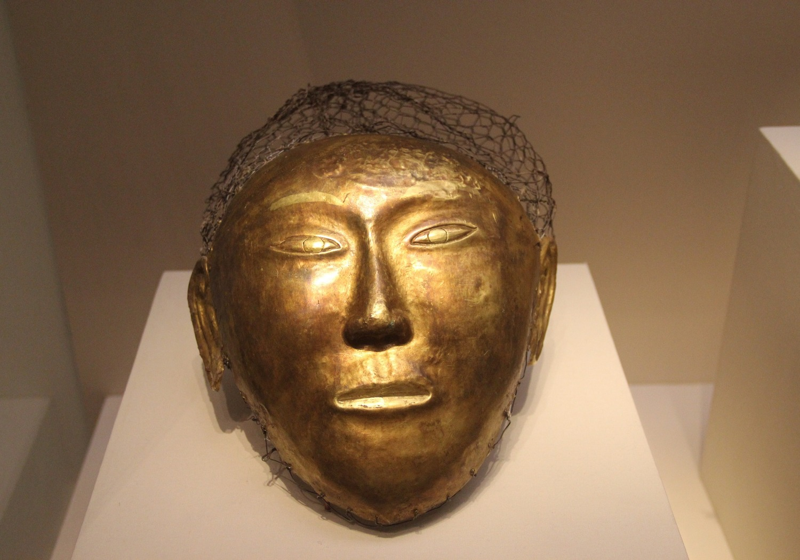
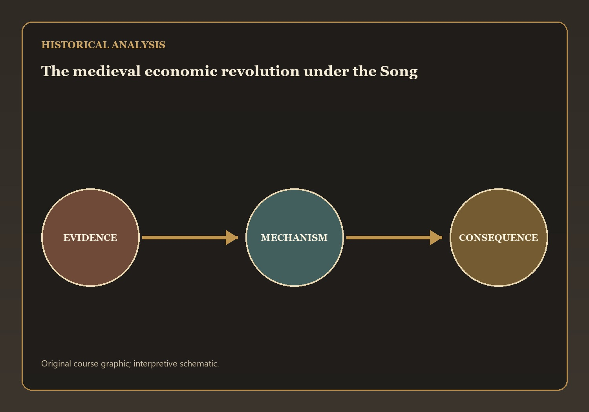
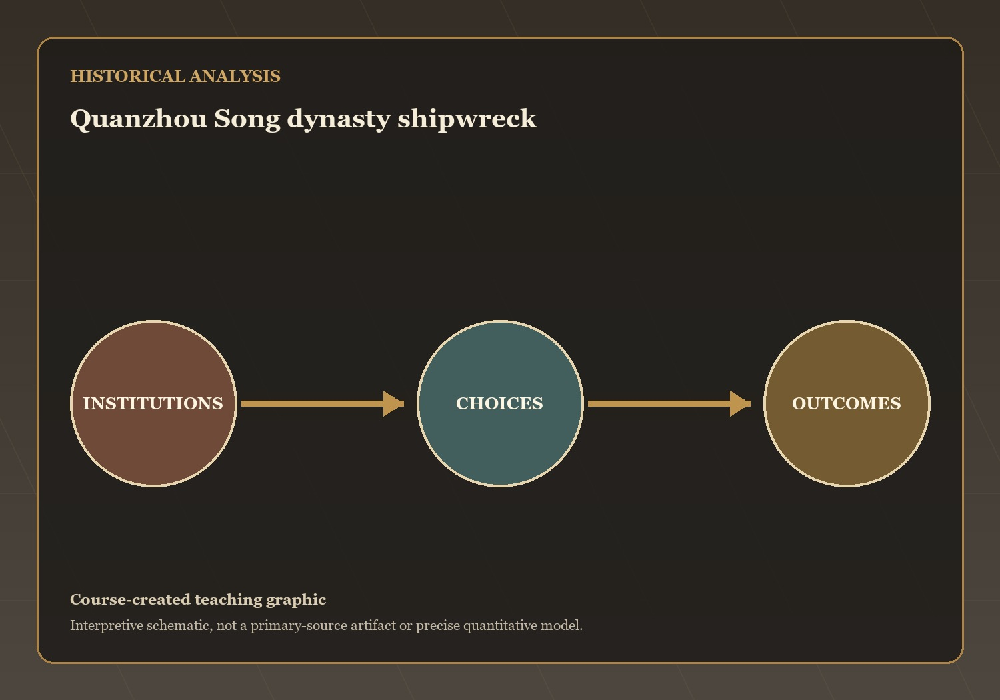

Questions and Problems
Mechanisms and Consequences
This lecture has treated how the Song accepted interstate parity while presiding over an agrarian, commercial, and maritime transformation as a connected…
Q1 — evidence, mechanism, and consequence

Visual evidence for Q1
The founders of the Song addressed internal warlordism by placing the military firmly under civilian control and reducing the autonomy of regional commanders. Rather…
What mechanism best explains this outcome? State your answer to Q1 as a causal claim.
Q2 — evidence, mechanism, and consequence

Visual evidence for Q2
The Liao developed a dual administrative system that governed different populations according to their traditions. Chinese subjects were ruled through Chinese-style bureaucratic institutions, while…
What mechanism best explains this outcome? State your answer to Q2 as a causal claim.
Q3 — evidence, mechanism, and consequence

Visual evidence for Q3
The medieval economic revolution was driven by agricultural expansion, improved rice cultivation, population growth, expanding markets, and increasing specialization of labor. Population roughly doubled…
What mechanism best explains this outcome? State your answer to Q3 as a causal claim.
Q4 — evidence, mechanism, and consequence

Visual evidence for Q4
Song merchants expanded maritime trade throughout Southeast Asia, India, and beyond. Technological innovations such as advanced ship design, watertight bulkheads, improved steering systems, and…
What mechanism best explains this outcome? State your answer to Q4 as a causal claim.
The open question: which development in this lecture most changed the range of choices available to ordinary people, and is that change visible in…
Scholar-Officials, Reform, and Conquest — the next stage of the course narrative.
→ / Space: Next | ←: Previous | S: Notes | F: Fullscreen | O: Overview | ESC: Close popup